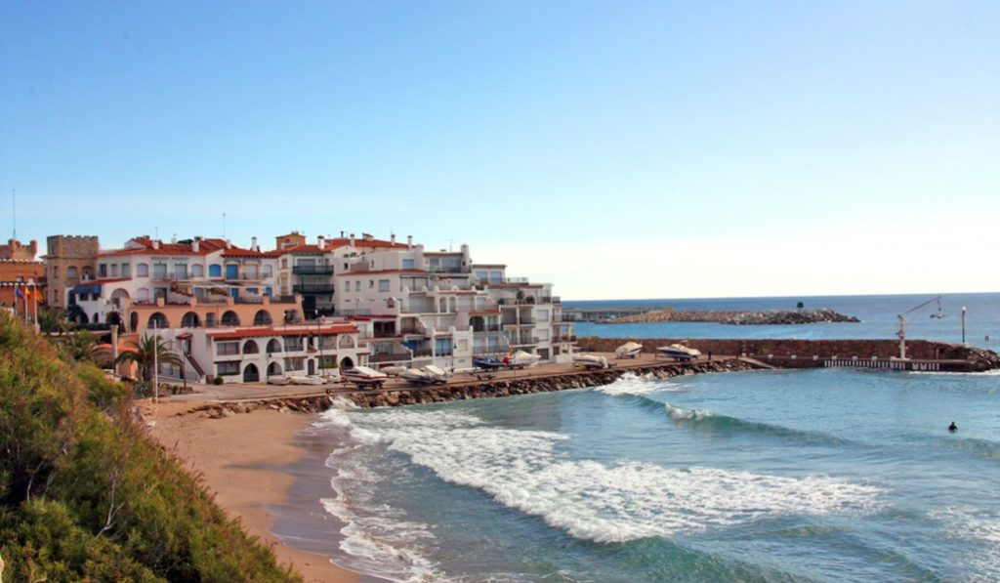
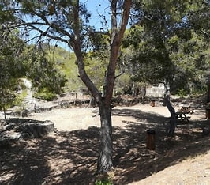
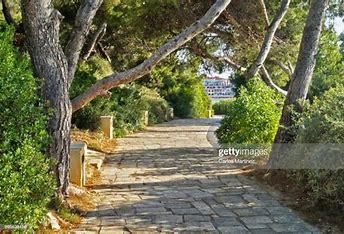
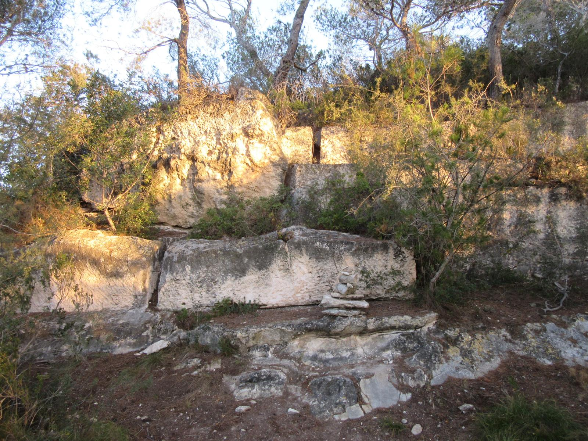
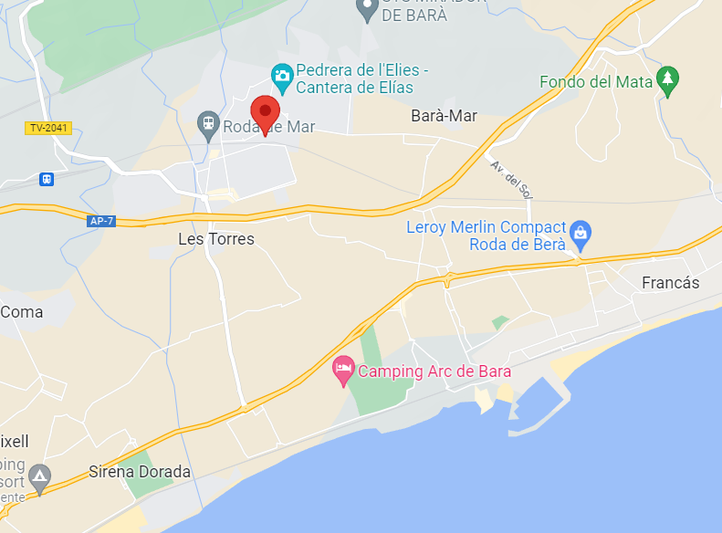

El actual término de Roda de Bra se encontraba cerca de la antigua Via augusta, contrsuida por los romanos en el sigo I a.C.
Se cree que el origen del topónimo se encuentra en el conde Bera de Barcelona quien se encargó de fortificar la zona en el siglo IX.
Formó parte de las posesiones del monasterio de San Pedro de Casserras hasta 1572 cuando los bienes del cenobio pasaron a los jesuitas de la iglesia de Betlem de Barcelona. Los monjes mantuvieron los derechos hasta su explosion ocurrida en 1767.
1. Roc de SANT GAIETA
El “Roc de Sant Gaietà” es un conjunto arquitectónico atípico, el cual se construyó entre los años 1964 y 1972.
En primer lugar se hizo una zona de apartamentos en primera línea de mar que fueron diseñados al estilo de los pueblos ibicencos y mediterráneos, complementándolo posteriormente, en su interior, con patios andaluces y sevillanos y fuentes granadinas que, junto con sus pequeñas plazas y callejones, le acabaron de dar el aire de pueblo típico.
2. Pedrera de l'elies:
La Pedrera de l'Elies són restes d'una antiga explotació lapídia a l'aire lliure ubicada al nucli urbà de Roda de Berà (Tarragona). Consta d'un parell d'àrees extractives separades per una cinquantena de metres. El front més gran ocupa una superfície de més de 6.500 m2 i conserva en un dels seus extrems les restes d’un forn de calç. El més petit, d’uns 750 m2, presenta marques de barrinades.
1. Camino de Ronda
Esta ruta lineal es un paseo por un tramo del camino de Ronda. Con inicio en el pequeño pueblo del Roc de Sant Gaieta, de una arquitectura singular y con una máxima representación del tradicional pueblo pesquero, y final en la playa larga de Roda de Berà, junto a la ermita de la Virgen de Berà. A diferencia de otros tramos del camino de la Costa Brava este está totalmente adaptado, en un itinerario ancho, seguro y sencillo. Por este motivo resulta muy recomendable para hacerlo con los niños o con pareja.
2. Cantera romana del Xicu-La Murtra
Ruta circular por las colinas que rodean Roda de Bará, salida desde el aparcamiento municipal a la entrada de la localidad, en direccion al Campo de futbol, para dirigirnos paralelos a la AP7 entre almendros y algarrobos hacia la urbanizacion Bara Mar
Territorio de Roda de Bara
